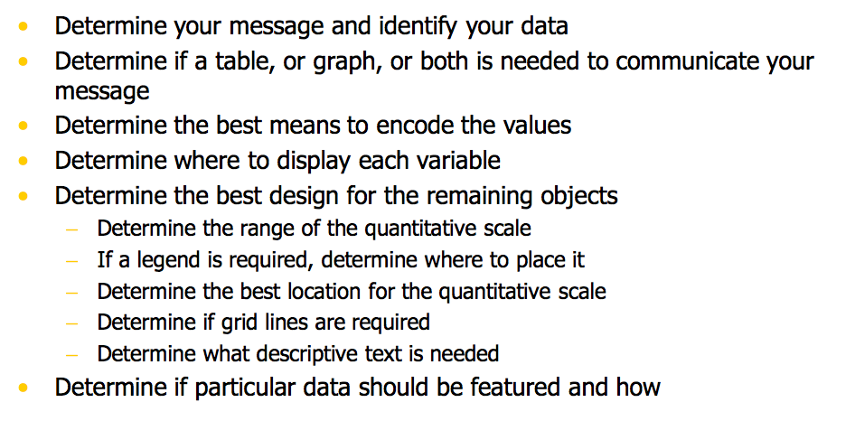

Design Principles
Types of data
- Univariate, Bivariate, Trivariate, Multi-variate (Hypervariate)
tables, scatterplot, [scatterplot matrix, chernoff faces, mosaic plot, parallel coordinates, star plot (radar chart), star coordinate, table lens, crosstab, parallel set] - Time series data
Lines, Bump charts, - Numerical vs. Categorical
Cateogircal: shape, color, icon -
set data
Venn Diagram <3 ; Euler Diagram > 3 , bubble set
Focus of data
- Precise values
Table, stem-and-leaf plot, - Change over time (Time series)
- Distribution
Boxplot

Tips
- Don't use rainbow color for quantitative data
- Value of Vis: Time (save time to answer) + Insight (discover insight, e.g. relationship)
Gestalt Laws (从心理学角度了解人类视觉上的天性）
- Proximity, Similarity, Closure,
Concept
- Pre-attentive: 200ms
- Cluster at high dimensions: deal with large variates. e.g. k-means, hierachical clustering, aggregation
- Interaction: selection,filter, abstract/elaborate, encode, reconfigure, explore
- Dynamic Query: +work is faster, very natural interaction, support undo, exploration, reversing. - cannot express complicated logic,
- Static vs Dynamic time-series visualization:
static: + show history, allow comparison
animation gives feel for process & change over time.